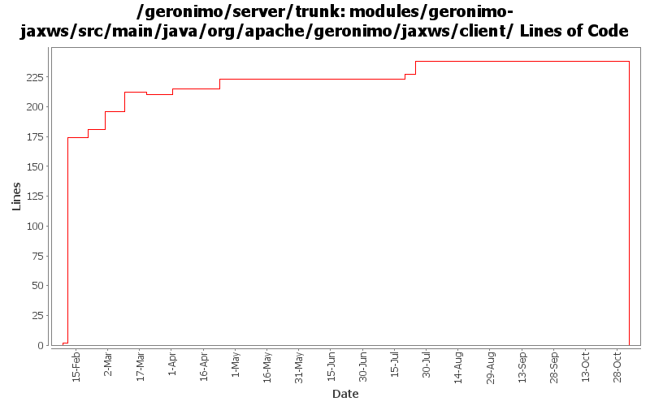

[root]/modules/geronimo-jaxws/src/main/java/org/apache/geronimo/jaxws/client

| Author | Changes | Lines of Code | Lines per Change |
|---|---|---|---|
| Totals | 26 (100.0%) | 441 (100.0%) | 16.9 |
| dims | 11 (42.3%) | 353 (80.0%) | 32.0 |
| gawor | 8 (30.8%) | 70 (15.9%) | 8.7 |
| jgenender | 2 (7.7%) | 18 (4.1%) | 9.0 |
| prasad | 5 (19.2%) | 0 (0.0%) | 0.0 |
GERONIMO-3565. Modules distributed amongst framework/modules and plugins
0 lines of code changed in 5 files:
cache generated classes for service-refs - should reduce perm gen OOM errors (jaxrpc needs one more fix)
31 lines of code changed in 1 file:
let subclasses pass their own PortMethodInterceptor
5 lines of code changed in 1 file:
overwrite endpoint address for createDispatch methods as well
9 lines of code changed in 2 files:
prefer service-ref-type service class (if set)
7 lines of code changed in 1 file:
basic saaj 1.3 integration
0 lines of code changed in 1 file:
set properties on generated methods
18 lines of code changed in 2 files:
GERONIMO-2882 patch committed
18 lines of code changed in 2 files:
running dos2unix and set svn:eol-style native ONLY (no code changes)
5 lines of code changed in 5 files:
GERONIMO-2849 - service-ref app client test
GERONIMO-2850 - CXF: initial web service support for EJBs
174 lines of code changed in 1 file:
- start working on service-ref support by moving common code to jaxws
- populate axis2's msf context with servlet req/resp/context
- add an initial impl for Axis2WebServiceContext
172 lines of code changed in 3 files:
Fix for GERONIMO-2807 - CXF: initial service-ref support
2 lines of code changed in 2 files: